模型分享
10月25日STl图纸文件分享
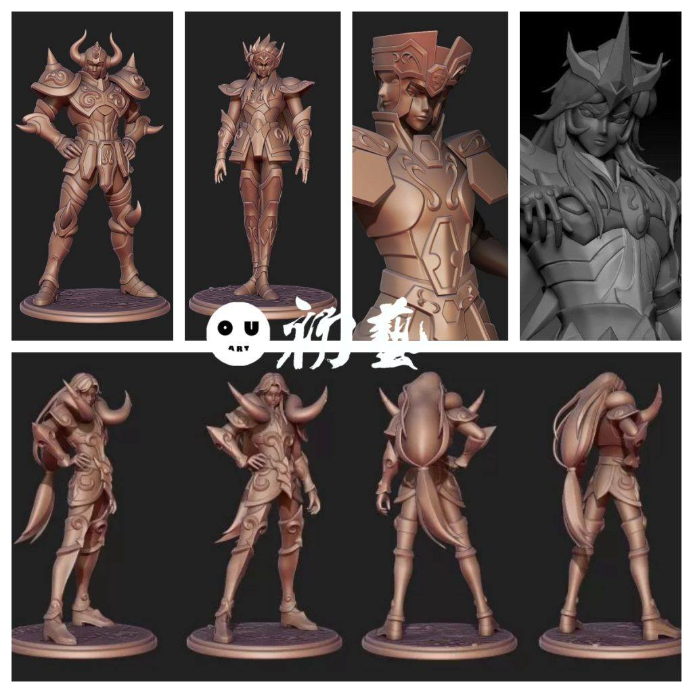
几个圣斗士的模型分享，以后有机会再慢慢更新。这几个模型都有分件，精度也不错。黄金圣斗士，适合练习金色涂装。
1.金牛座
链接：https://pan.baidu.com/s/1LAnZGxCEnGk_z7abvX7e7A
提取码：a4am
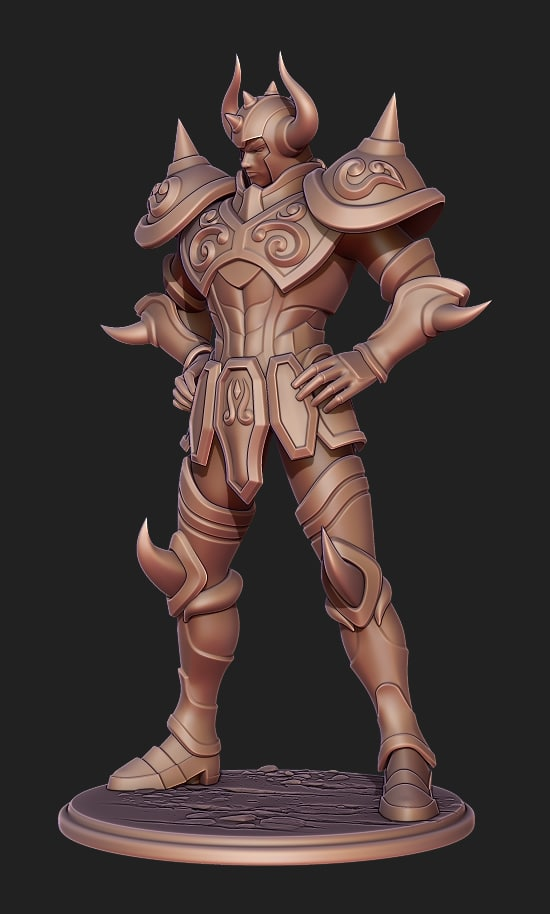


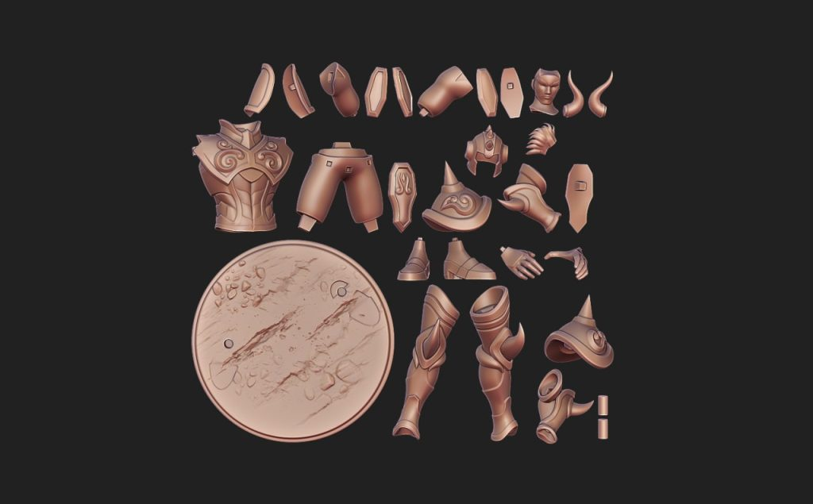
2.水瓶座
链接：https://pan.baidu.com/s/1lrg8ODfDVGoAF-gbC4i0dQ
提取码：hioq
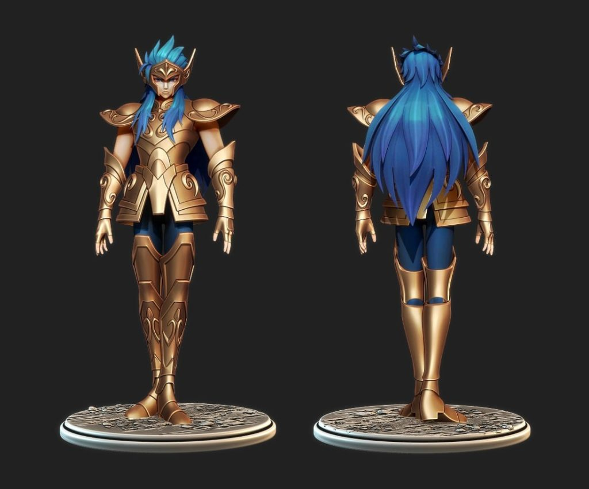
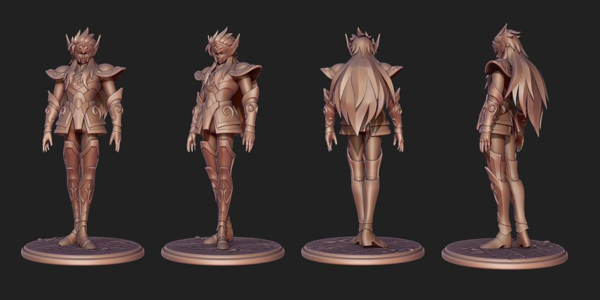
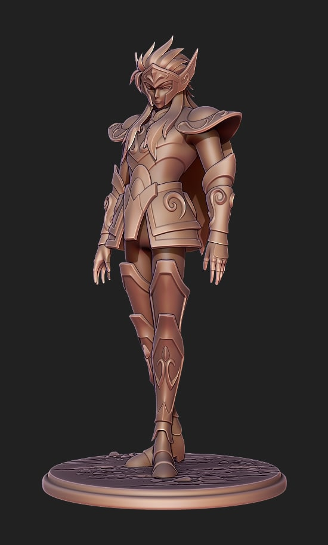


3.双子座
链接：https://pan.baidu.com/s/18cbQHDdE1Er2wq9yuGXf-A
提取码：funn

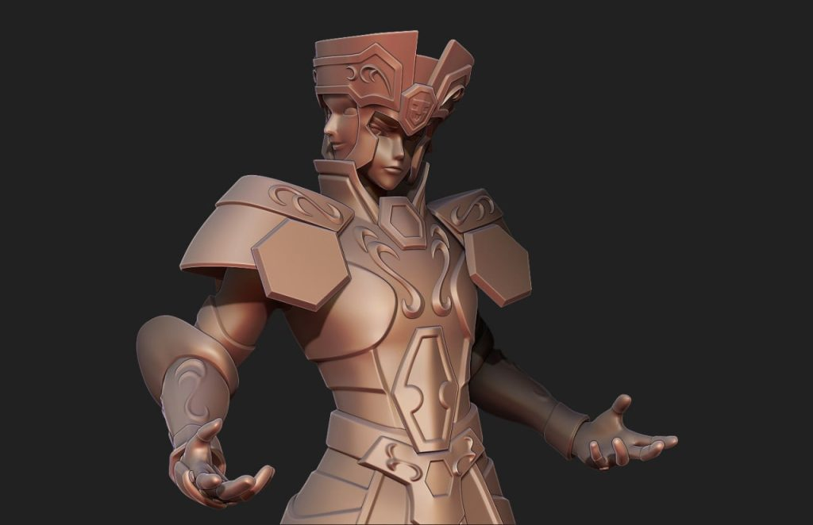


4.天蝎座
链接：https://pan.baidu.com/s/12zJxhtQVwPSwCRLRowS0dA
提取码：tqpb


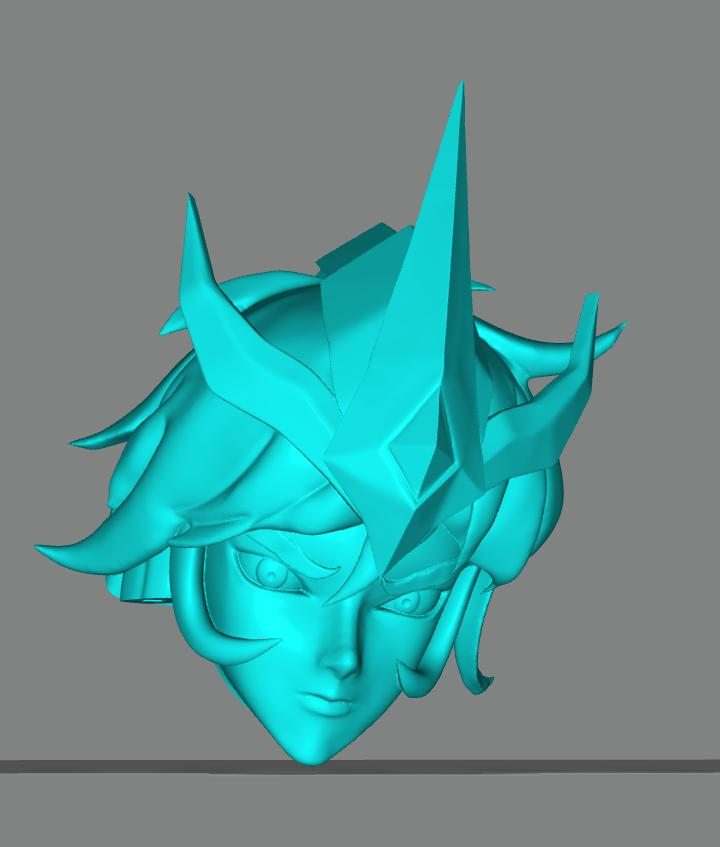

5.白羊座
链接：https://pan.baidu.com/s/1I1UA2o-aqlU54HM8swujDA
提取码：50a6
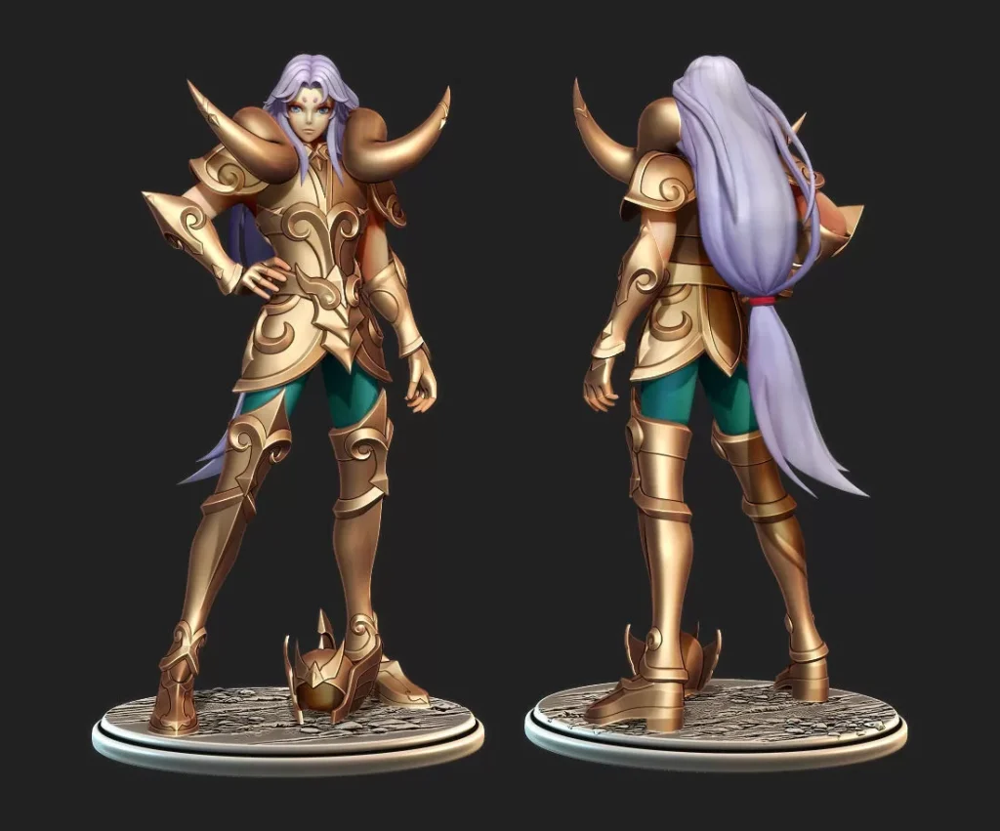

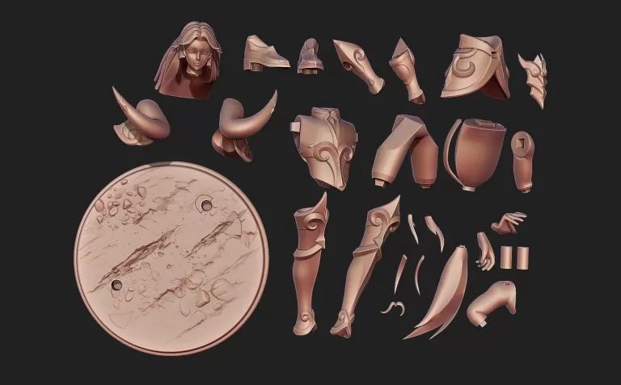
6.巨蟹座
链接：https://pan.baidu.com/s/18Mi9l15fD6Yut-1rk0N3DA
提取码：1efm
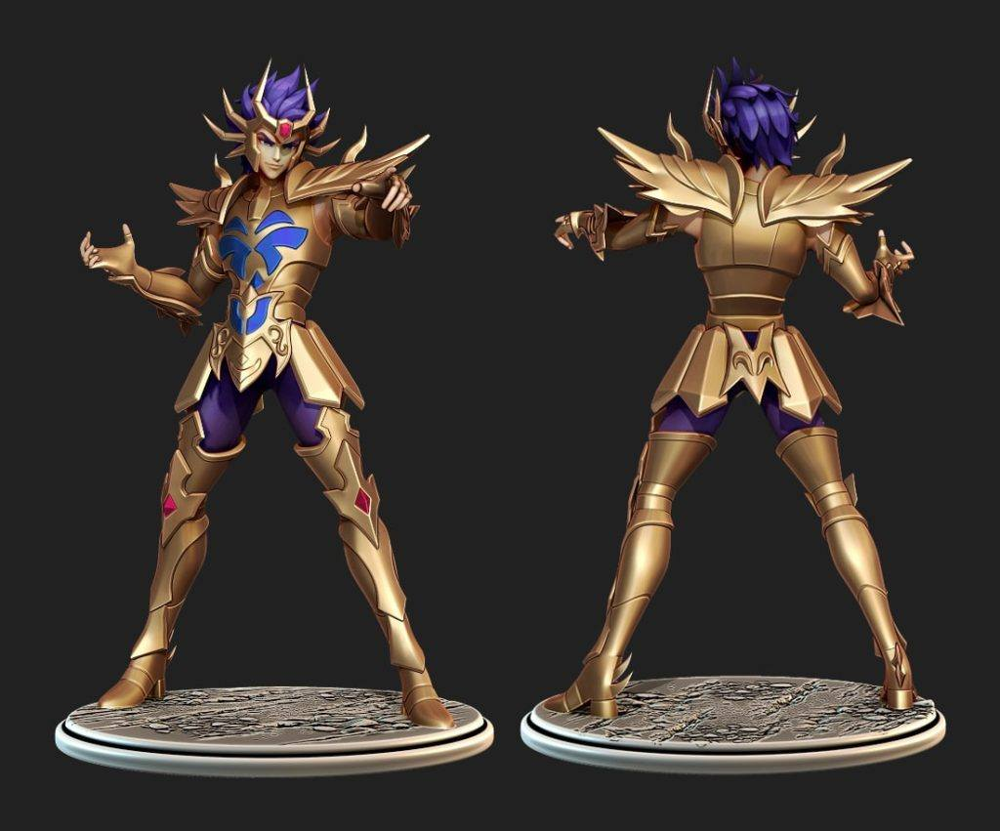

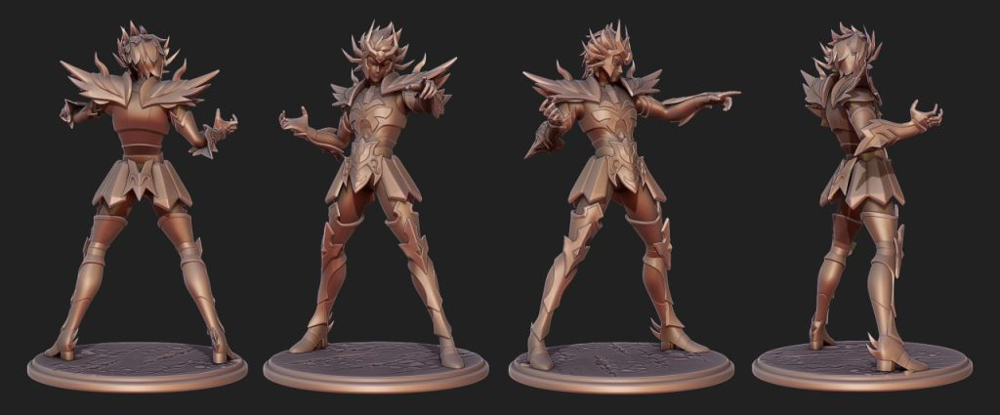
以上内容仅供个人使用（非商用）
ONLY for PERSONAL (NON-COMMERCIAL) use.
加群获得更多免费模型！